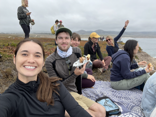
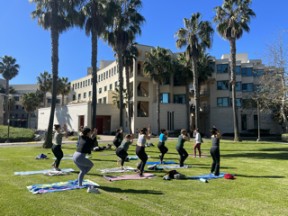
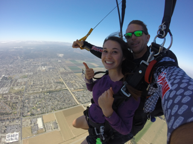
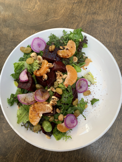
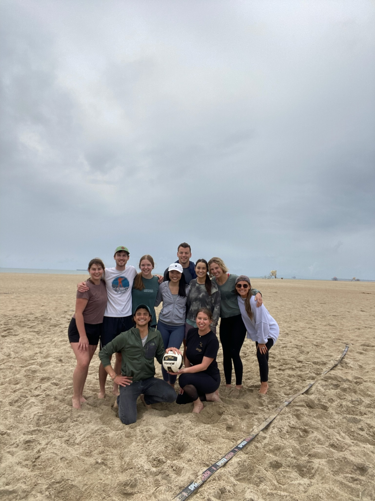

About
Welcome! Here, you’ll find a glimpse into my interests, passions, and adventures.
I recently graduated from the Master of Environmental Data Science program at the Bren School of Environmental Science & Management at UC Santa Barbara (UCSB). My current interests lie in Environmental Policy, Forestry Management, Biodiversity Conservation, Sustainable Food Systems, Environmental Education and Communication, and Data Visualization and Storytelling.
Prior to my master’s studies, I completed my undergraduate studies at UCSB in 2017, graduating with a Bachelor of Science in Environmental Studies. During my time as an undergraduate, I had the opportunity to lead reforestation and sustainable agriculture projects in South America for a nonprofit organization
After graduating, I worked as an Environmental Specialist for an Environmental, Health, Safety, and Sustainability consulting company. In this role, I evaluated and identified environmental impacts, and I recommended and implemented solutions for clients in both the private and public sectors.
Throughout my career as an environmental consultant, I witnessed the disproportionate environmental impacts in marginalized communities, which highlighted the urgency for reproducible data science and visualization skills in developing effective solutions to environmental challenges.
My ultimate goal is to leverage data science tools to derive data-driven solutions for complex environmental problems and to effectively communicate this information to diverse audiences, making it accessible and driving positive change.
One of my ultimate life goals is to explore the United States’ national parks. With a passion for exploration, I have already embarked on this journey, stepping foot into some of the most iconic national parks across the US. From the rugged landscape of Volcanoes in Hawaii to the awe-inspiring beauty of Glacier in Montana, each park has left a lasting memory.
To keep track of my progress, I’ve mapped out my national park adventures. This interactive map not only showcases the parks I have had the privilege of exploring but also highlights the ones still awaiting my arrival.
While reaching every country might be too lofty of a goal, I am determined to visit every continent on earth. I have created this map to keep a record of my global explorations.
(map in progress)
During my free time, I enjoy being outdoors and participating in various activities such as playing soccer or volleyball, running, hiking, and camping with friends. I’m also passionate about health and wellness, and like to stay informed and inspired by reading books on nutrition and related topics. Prioritizing my physical health is important to me, so I also make time for regular workouts. Cooking and experimenting with plant-based recipes is another hobby I enjoy. My hobbies help me maintain a healthy work-life balance and bring joy to my everyday routine.




